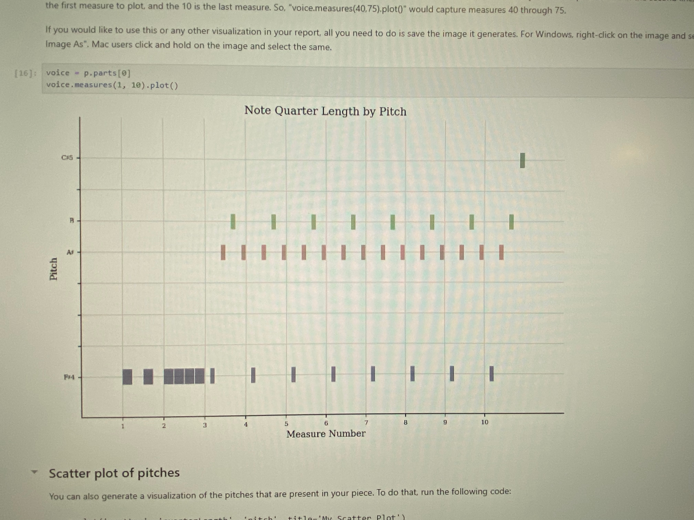
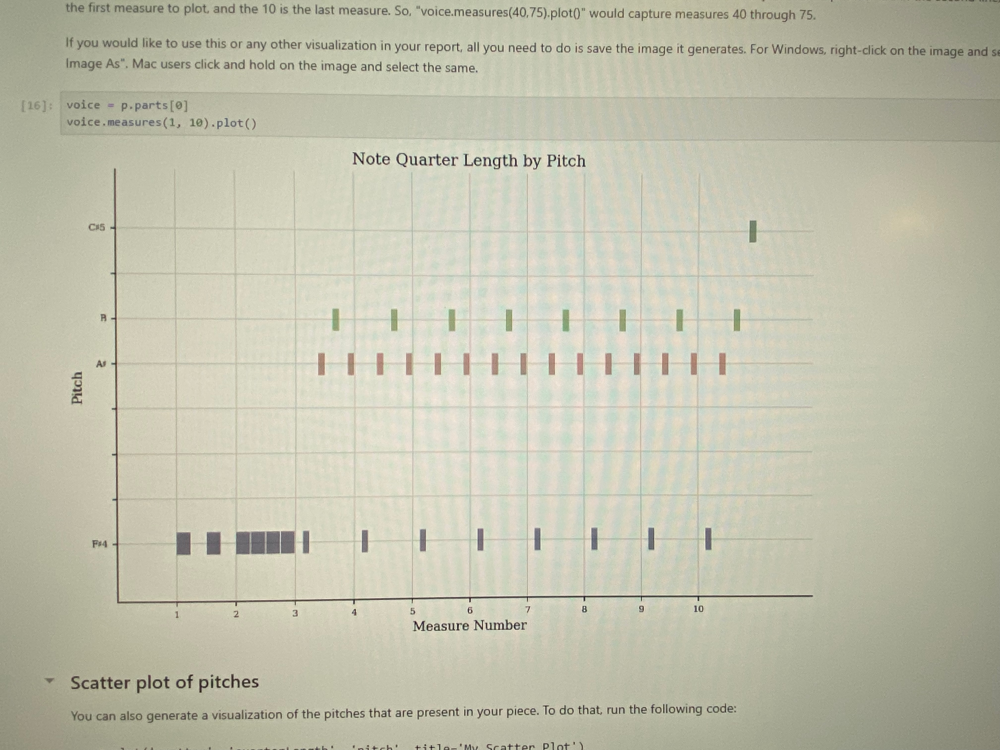

The features I analysed and their JSymbolic Analysis
Range: 38
Displays the difference in semitones between the highest and lowest pitches.
Mean Pitch: 54
Displays mean MIDI pitch value, averaged across all pitched notes in the piece.
N. of Common Pitch Classes: 2
DIsplays number of pitch classes that account individually for at least 20% of all notes. Enharmonic equivalents are grouped together for the purpose of this calculation.
Last Pitch: 80
The MIDI pitch value of the last note in the piece. If there are multiple notes with simultaneous attacks at the end of the piece, then the one with the lowest pitch is selected. Set to 0 if there are no pitched notes.
Most Common Rhythmic Values: 0.25
The most common rhythmic value of the music, in quarter note units. So, for example, a Most Common Rhythmic Value of 0.5 would mean that eighth notes occur more frequently than any other rhythmic value. This calculation includes both pitched and unpitched notes, is calculated after rhythmic quantization, is not influenced by tempo, and is calculated without regard to the dynamics, voice or instrument of any given note.
Using this data, I used jupyter Notebook to create the following Piano Rolls and Pitch Historagrams. Piano rolls visually represent musical sequences by showing notes as horizontal bars along a timeline, where pitch is indicated by vertical position, and duration by the length of the bars. Pitch histograms, on the other hand, display the frequency of occurrence of each pitch in a piece, offering insight into the distribution of notes and tonal characteristics.
 
